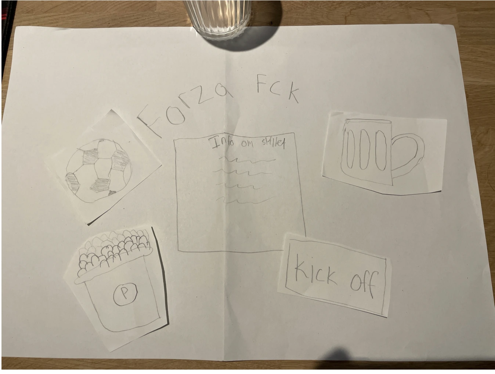

Tema 4
Beskrivelse af tema
I Tema 4 arbejdede jeg med at udvikle mit eget spil fra bunden, og det har givet mig en rigtig god forståelse for, hvordan grafik og animation spiller sammen i webudviklingens verden. I det her tema bliver vi også introduceret til javascript, og css animationer. Her lærte vi også hvordan vi behandlede vores grafiske elementer og hvordan vi fik vores svg filer implamenterede til voresspil
Beskrivelse af opgave
Vi skulle lave et animeret spil, som vi selv skulle designe fra bunden, ved hjælp af illustrator. Udover det skulle vi lave 4 andre html sider, som vidste dokumentation af spillet (assets, teknik, grafik og en forside)
Klik her for at se mit projektHvordan jeg løste opgaven
I starten arbejdede jeg med at udvikle en ide og et koncept til spillet, og derefter begyndte jeg at designe de grafiske elementer i illustrator (fx baggrunde og figurer) Her lærte jeg at arbejde med SVG-filer og hvordan man eksporterede dem ind i vs-code.
Efter jeg havde skitserede mine elementer,baggrund, karaktere på et stykke papir, skulle jeg sætte dem ind i illustrator og tegnede dem der.
Herfter begyndte jeg at lave aktivitetsprogrammer, som skulle vise de forskellige udfald som kunne ske i spillet.
Efter byggede jeg selve spilsiden op med html og css. Det inkluderede både layout af spilscenen og placering af spilelementer og knapper (UI elementer). Jeg lærte også at bruge css animationer og lærte at få elementerne til at flyve.
I den næste fase begyndte jeg at bruge javascript til, at styre spillets animation. Jeg lærte at starte og stoppe animationer samt at få mine animationer til at live klikbarer og reset i random positioner.
Senere arbejdede jeg videre med at tilføje funktioner som pointsystem, liv, og betingelser for at vinde eller tabe spillet. Det sidste som vi gjorde var at sætte lyd på spillet, hvilket faktisk var meget sjovt. Her lærte jeg hvordan man satte specifikke lyde ind, hvis man trykkede på henholdsvis de dårlige eller gode elementer.